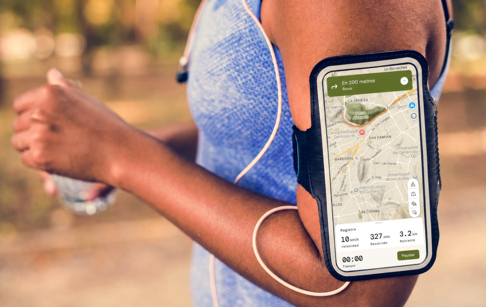
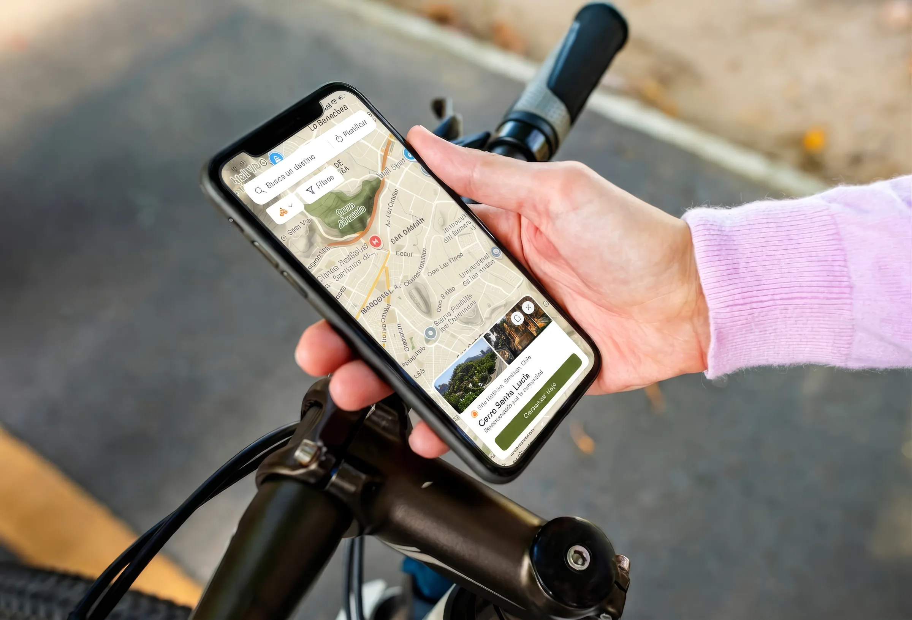
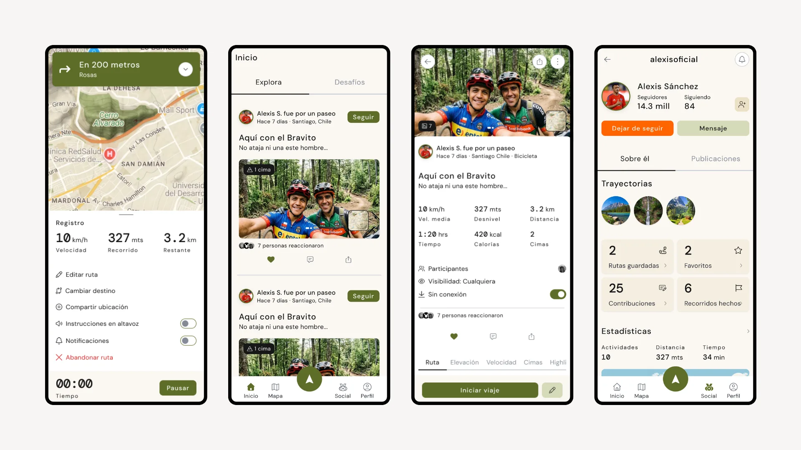
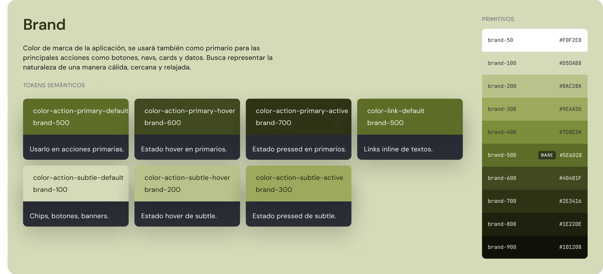
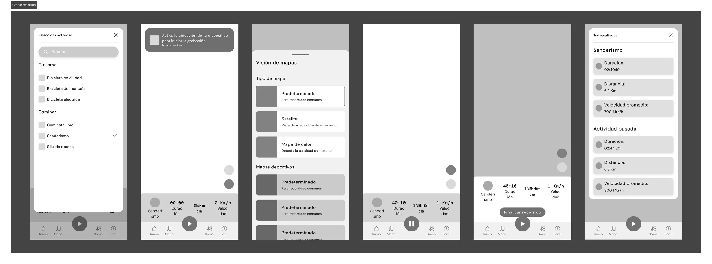
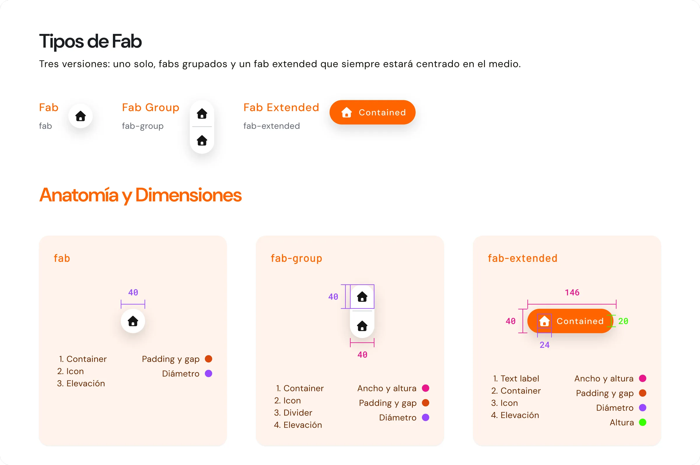
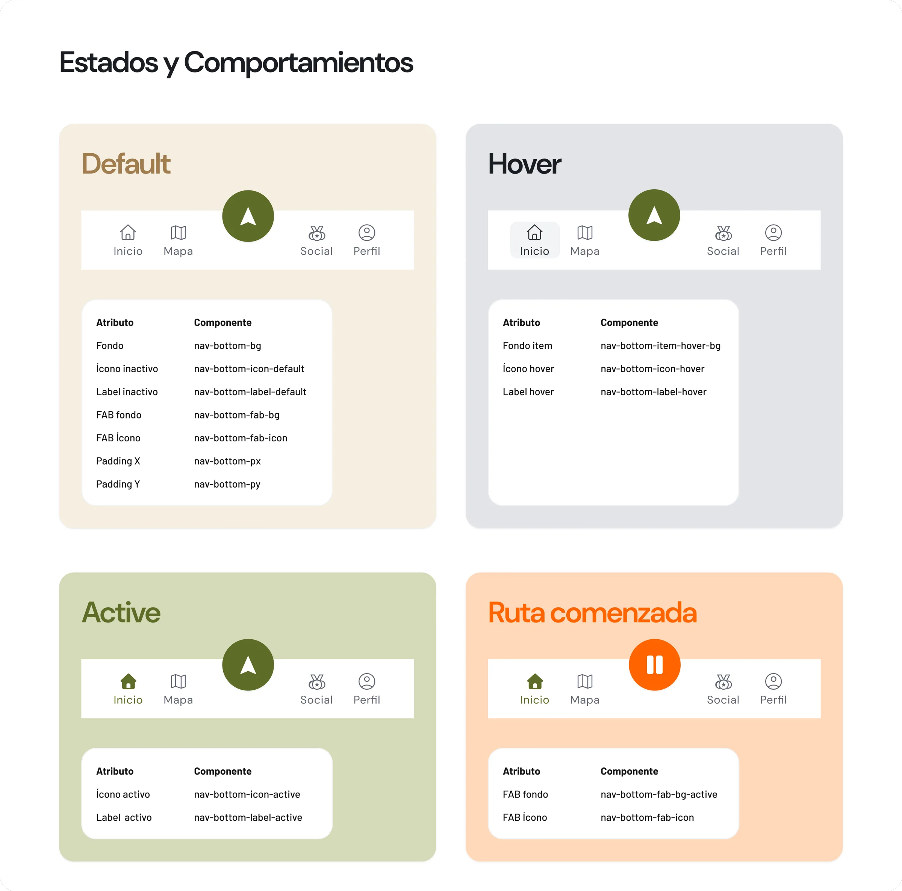
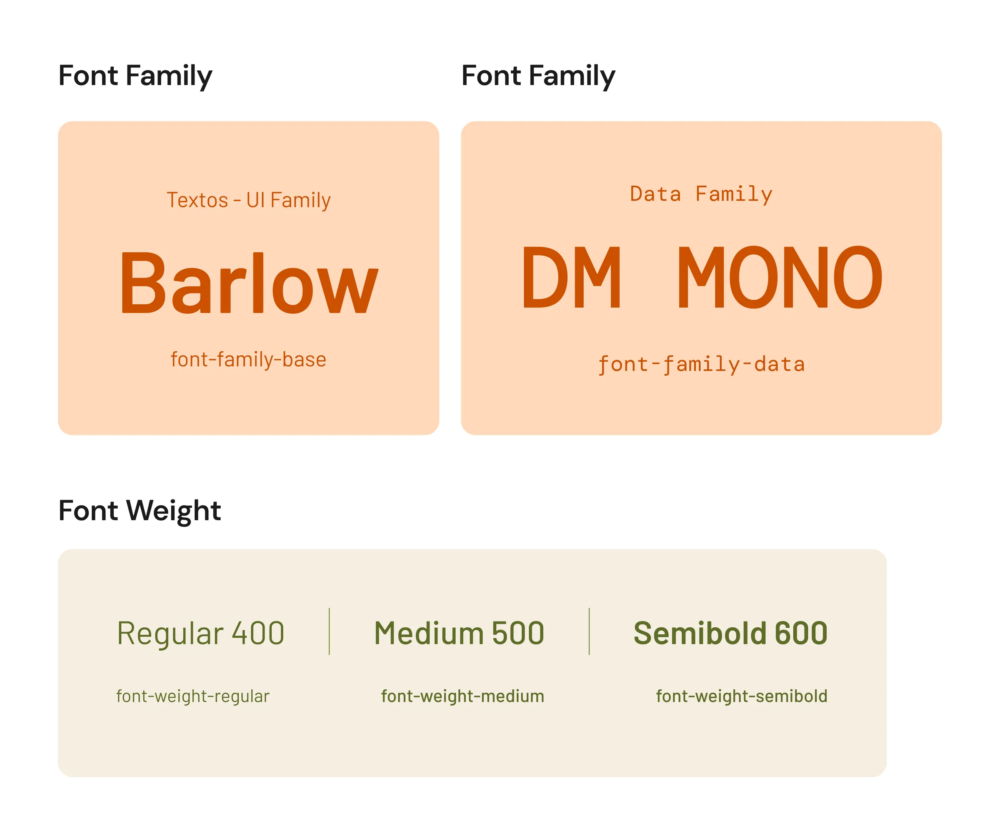
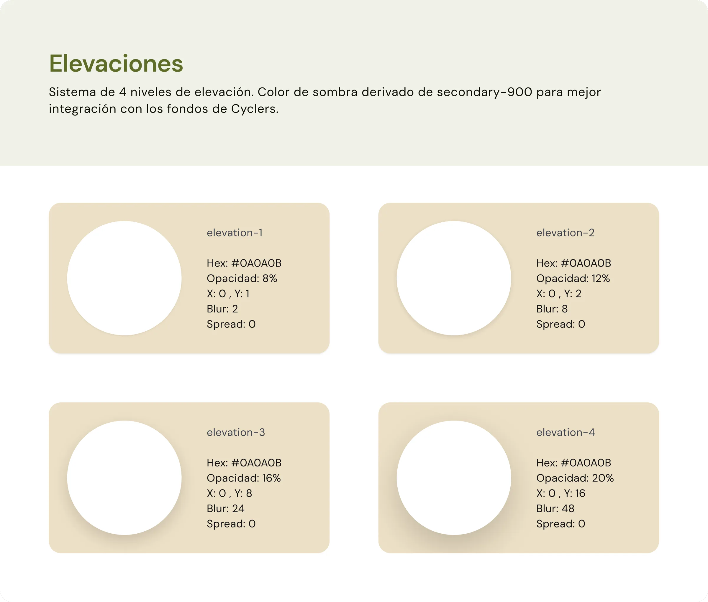

UX/UI · Branding
CYCLERS
Diseño de Design System para app de ciclismo
Revisar figma →Spot comercial
2026
CONTEXTO
Para Taller de Interacción, analizamos Cyclers, una app de navegación para ciclistas, y detectamos un problema de base: no tenía sistema. El verde dominaba cada pantalla sin jerarquía, los componentes no compartían una misma lógica de forma (bordes rectos, curvos y circulares conviviendo sin criterio) y la experiencia se sentía aislada, sin ninguna señal de comunidad o validación social.
Construimos un design system desde cero sobre Material Design 2, con arquitectura de tokens en tres niveles (primitivo → semántico → componente) y una jerarquía documental completa: principios de diseño, fundamentos, elementos, componentes y patrones. Cada decisión —desde la altura de un botón hasta la desviación de la Nav Bottom respecto al estándar MD2— quedó justificada por escrito, no por intuición.
El sistema quedó compuesto por 10 componentes documentados end-to-end (Nav Bottom, Buttons, Search Field, Chips, Tabs, FAB, Accordion, Switch, Dialog, Toast/Snackbar), 42 variables semánticas de color y 3 flujos de prototipo animados en Figma. Tipografía DM Sans para UI y DM Mono para datos numéricos, para que cada métrica de ciclismo se lea como dato, no como texto.

UI pensada para contextos ágiles y de rápido contacto
AÑO
2026
CATEGORÍA
Design Systems · UX/UI
STACK
Figma · Figma Variables · Atomic Design

Busca mejorar la app, generando comunidad

Con una UI más moderna, intuitiva y atractiva para el usuario

El sistema resuelve la tensión visual heredada del análisis inicial: reemplaza el monocromatismo verde por una escala de rol (acción, superficie, texto, ícono), unifica la morfología de todos los componentes bajo un mismo criterio de curvatura, y da forma a la dimensión social —perfiles, rutas de comunidad, validación entre ciclistas— que la app original no tenía.


Bocetos para comenzar los componentes

Estructuración para cada componente

Tokens para cada estado

Tipografías pensada para lectura rápida en viajes

Una plantilla de documentación